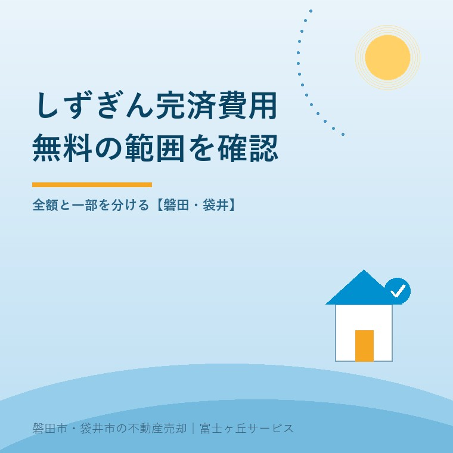
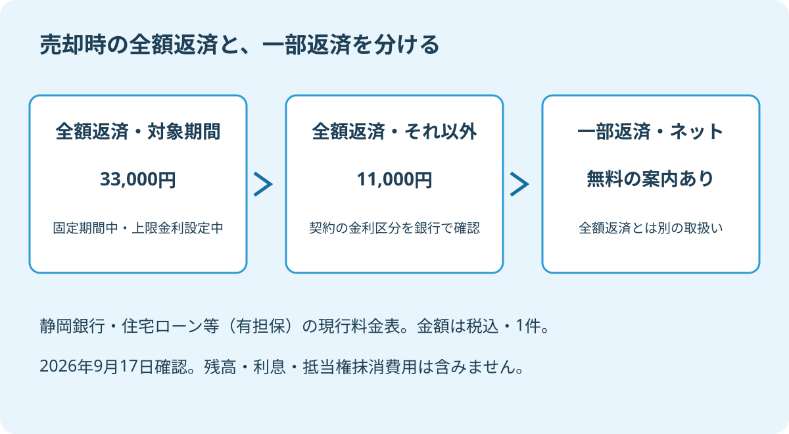

静岡銀行の全額繰上返済手数料｜売却前の比較
2026年9月17日｜カテゴリ：住宅ローン・売却費用

この記事の要点
Q. しずぎんはネットなら、家を売るときの完済も無料ですか。
静岡銀行の現行表では、住宅ローン等の全額繰上返済は固定期間中などが税込33,000円、それ以外は11,000円です。ネット無料は一部返済の案内で、完済へ当てはめません。磐田市・袋井市・森町では、介護施設の運営から不動産事業を始めた富士ヶ丘サービスのような地域密着の会社に相談する選択肢があります。
「ネットなら繰上返済の手数料は無料」。住宅ローンの案内でこの言葉を見て、家を売るときの完済費用もゼロと考えてしまう。売却の資金表を作るときに、まず止めたい取り違えです。
大石浩之（磐田市／不動産業）です。宅地建物取引士として私は、売値からローン残高を引くだけで手取りを説明しません。銀行に払うお金、登記のために用意するお金、決済の日程を分けて整理します。今回は静岡銀行の本支店取引向け料金表を読みます。
全額繰上返済は、金利の区分で2つの料金
静岡銀行の「ローン・融資関連手数料」では、住宅ローン等（有担保）の全額繰上返済手数料は、対象の固定期間中などが1件税込33,000円、それ以外が11,000円です。2026年9月17日に現行表の区分と金額を確認しました。
全額繰上返済とは、予定された返済の途中で、残っているローンを全て返すことです。残高の一部分だけを先に返す一部繰上返済とは扱いが分かれています。家を売って完済する相談では、最初に「全額」と伝えてください。
| 現行表の全額繰上返済の区分 | 1件あたり・税込 |
|---|---|
| 住宅ローン（固定・変動ミックス型）の固定期間中 | 33,000円 |
| 住宅ローン（変動・上限金利選択権付）の上限金利設定期間中 | 33,000円 |
| 上記以外の場合 | 11,000円 |
上限金利選択権付は、表に載っている商品区分の名称です。「変動」と付いているから11,000円、と名前の一部だけで判断できません。上限金利を設定している期間かどうかまで、借入内容と照合します。
逆に、家族の記憶が「固定で借りたはず」でも、完済予定日にどの区分なのかは契約を見なければ分かりません。返済予定表や借入内容が分かる画面を手元に置き、銀行から区分名を回答してもらいます。商品名を推測して金額を決める必要はありません。
同じ料金ページには無担保ローンや事業性の融資も載っています。検索結果の数字だけを拾わず、住宅ローン等（有担保）の全額繰上返済欄まで確認してください。別の商品や取引窓口の契約なら、その契約に対応する案内を銀行に示してもらいます。
2025年10月の改定告知と、現行表を分ける
静岡銀行は2025年9月29日、消費性ローンに関する各種手数料を2025年10月1日から改定すると告知しました。住宅ローンを売却で完済する費用を調べる際も、古い説明だけでなく、改定後の料金表を確かめる入口になります。
ただし、告知の例示は住宅ローンの事務取扱手数料と条件変更手数料です。事務取扱は借り入れ時などの取扱い、条件変更は返済日などを変える手続きで、全額繰上返済とは別の行です。この記事では、告知の金額を完済手数料へ読み替えていません。
私は、告知から現行表へ進める点を評価します。改定の施行日と、今使うべき料金を照合できるからです。家族が保管している資料の時点が古くても、銀行へ聞き直す手掛かりになります。
そのうえで説明する側には、「何の手数料が変わったのか」を省かないでほしい。私はそう考えます。改定告知があることと、全額繰上返済の料金自体がその日に値上がりしたことは同じではありません。今回の資料だけから、全額返済の値上げ履歴までは断定しません。
家族のメモにも「銀行手数料」と一括りで書かず、「全額繰上返済」「条件変更」のように用件を書きます。銀行へ確認した日と回答された金額が対になっていれば、決済直前の説明と違った場合も、どの手続きの話だったかをたどれます。
ネット無料で、全額返済の予算をゼロにしない
静岡銀行の現行料金表では、しずぎんダイレクト利用時の無料案内は一部繰上返済の欄にあります。住宅ローンを売却代金で全て返す費用として、その無料案内をそのまま使うことはできません。
私は、ネット無料の一言で、売却費用をゼロにしない。銀行が示している無料の範囲を読むことは、売主を疑り深くするためではありません。決済の朝に、用意したお金が足りないという行き違いを避けるためです。

全額返済の二つの金額の差は、33,000円－11,000円＝22,000円です。この差額は、売主の持ち出しとして比較できます。ただし、自分の都合で安い区分を選べるという意味ではありません。完済予定日にどの区分が適用されるかを先に確認します。
仮に固定期間の終了を待つ話が出ても、手数料の差だけで決済日を動かすのは早計です。待つ間の利息、空き家を維持する支出、買主が希望する引渡し日も変わります。比較するなら、銀行に二つの候補日の完済額を確認し、ほかの支出と条件を同じ表に載せます。
私は少額の手数料も、売主の手取りから落としません。一方、22,000円の差を避けるために取引全体の日程を崩す判断には迷いがあります。節約額だけなら計算できますが、買主との合意を含めた負担は家ごとに違うからです。まず数字を並べ、変更するかはそれから考えます。
比較の土台は、売値より手取りで考える実家売却で整理できます。手数料の欄を0円で埋めるより、銀行へ照会中と残す方が正確です。未確定の支出を消すと、手取りだけが大きく見えてしまいます。
磐田・袋井の売却は、完済日と抹消の準備を合わせる
磐田市・袋井市でローンの残る家を売る場合、私は銀行への完済相談と、司法書士への抵当権抹消の相談を同じ日程表に載せます。抵当権は、融資の担保として不動産に付いた権利です。借金を返すことと、登記の記録を消す準備を分けて確かめます。
全額繰上返済手数料の33,000円や11,000円に、ローン残高そのものは含まれていません。利息の精算や抵当権抹消の費用も、別の確認です。銀行へ求めるのは手数料だけの回答ではなく、予定日に完済するために必要な金額の内訳です。
| 確認する相手 | 見積もりと日程で聞くこと |
|---|---|
| 静岡銀行の取引窓口 | 完済額の内訳、申込期限、返済方法、抹消書類の準備 |
| 仲介会社 | 買主の入金予定、引渡し日、資金表の不足額 |
| 司法書士 | 抹消登記の必要書類、受取方法、費用と申請の段取り |
抹消の基本的な考え方は、抵当権とローン残高の確認につながります。「残高が分かったから売れる」と即断せず、完済に使える資金と、書類がそろう日を照合してください。登記の個別判断は専門家に確認を。
遠方に住む家族が磐田の実家を整理する場合は、誰が銀行へ連絡し、誰が書類を受け取るかまで決めておきます。所有者と借入人、窓口へ行く家族が違うなら、家族だから手続きできると考えず、必要な本人確認や委任の方法を銀行に聞いてください。
決済日に売却代金が入り、同じ日に返済などを行う予定なら、決済当日に動くお金も確認します。自分の預金から払うものと、売却代金から払うものを分ければ、当日までに準備する資金が見えます。
今日することは、銀行へ完済の見積もりを頼むこと
静岡銀行に今日伝える用件は、「住宅を売却するため、予定日に全額繰上返済したい。適用区分と完済額の内訳を教えてほしい」です。売却日が未定なら、その旨を伝え、見積もりに必要な情報から確認します。
- 借入契約の名前と、完済予定日の金利区分を確認する。
- 残高・利息・手数料を分け、見積もりの基準日を残す。
- 申込期限と抹消書類の準備を、決済予定に合わせる。
銀行へ照会した段階で、家の売却まで決める必要はありません。完済できるか、自己資金がいくら必要かを把握するための準備です。申込期限を一律の日数では示さず、取引窓口から自分の契約について回答をもらってください。
富士ヶ丘サービスは、磐田・袋井に根ざし、介護と不動産を一体で相談できる窓口を設けています。親の施設入居に伴う実家の売却も、家族が困らないよう、完済と引渡しの順番を整理します。私は無料という見出しより、家族の資金表に入る確かな金額から案内します。税務・登記・相続の個別判断は専門家に確認を。
よくある質問
売却の準備で確かめたい疑問に答えます。
- 静岡銀行の住宅ローンを全額返済する手数料はいくらですか。
- 2026年9月17日に確認した住宅ローン等（有担保）の料金表では、固定・変動ミックス型の固定期間中と、変動・上限金利選択権付の上限金利設定期間中は1件税込33,000円です。それ以外は11,000円です。住宅ローンの残高や利息、登記費用は含みません。自分の契約に適用される区分は銀行に確認してください。
- しずぎんダイレクトなら、全額繰上返済も無料ですか。
- 現行料金表のしずぎんダイレクト利用時の無料案内は、一部繰上返済の欄にあります。売却代金で残りを全て返す全額繰上返済へ、そのまま当てはめることはできません。銀行に『家を売却するため全額を完済したい』と伝え、申込方法、手数料、必要な準備期間を契約ごとに確認してください。
- 手数料の差が22,000円なら、売却を待つ方が得ですか。
- 33,000円と11,000円の差は22,000円ですが、手数料だけで完済日を動かす判断はしません。銀行に希望日の適用区分を確認し、延期に伴う利息、家の維持費、買主との引渡し条件を合わせて比較します。費用が必ず下がるとは限りません。抵当権抹消の日程や書類も司法書士と調整し、登記の個別判断は専門家に確認を。

この記事を書いた人：大石浩之（磐田市／不動産業・宅地建物取引士）
富士ヶ丘サービス株式会社。介護施設の運営から不動産事業を始め、磐田市・袋井市・森町で、介護と相続、実家の売却を一体で相談できる窓口を設けています。家族が困らない売却のため、資料と現地の条件を一件ずつ整理します。著者プロフィール
本記事は2026年9月17日時点の公開情報と筆者の意見です。制度・料金・手続きは変更されることがあります。具体的な作業費用や取引条件は依頼先に確認してください。税務・登記・相続の個別判断は、税理士・司法書士などの専門家に確認を。